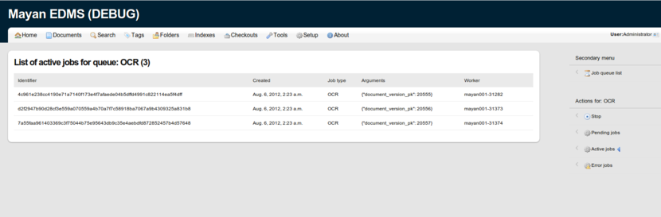
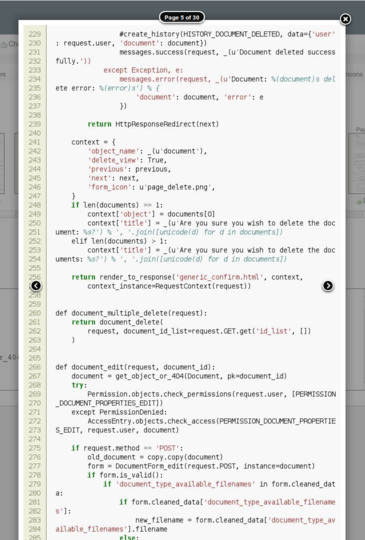
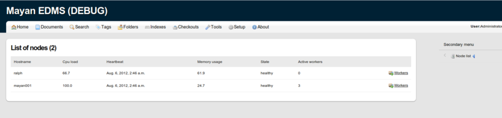
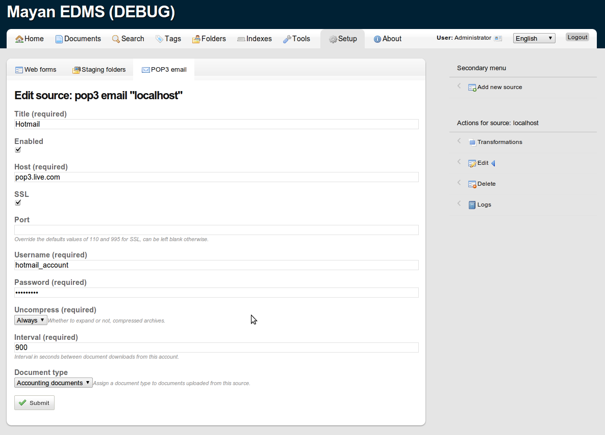

-
August 28, 2012
GPL violations, update
To all the people telling me to f****** learn to read and to RTFM the GPL: I have read the GPL, this is not my first project being released as Free software, as Open Source software or under the GPL (Descartes BI, Django-replication, pdf-form-fill). It is also not the first project to enjoy wide spread use and to be released as a commercial product by other people (Django-inventory), however in those instances the people doing the forks have complied with the GPL admirably providing source code for their changes, retaining all copyrights, notices and original license even when being released under a different name. That however is not the situation that is happening now. This is not "whinnying over some little program" (as it is being described commonly in the feedback I'm getting via email), the GPL is no less legal than a commercial license and must be followed and enforced equally, Mayan EDMS is not some "little program" currently sporting 26,000 lines of code. And just because a program is being released as Free Open Source software doesn't make it any less valuable as a commercial counterpart. Finally the entire source was not removed, only the development branch and the hotfix branch for the next version. Let me repeat that again, the entire source code was NOT removed only the TWO (2) latest unreleased branches. Lastly about the commercial competition issue: If I have no problems with people or business making money off Mayan EDMS, in fact I proud myself in creating commercial opportunities to others by advertising them, right here, in this very website, on the top menu, three tabs to the right. I hope this clarifies and overturns some of the misinformation being circulated, thank you.
-
August 27, 2012
GPL violations
I choose to release Mayan EDMS under the GPL which means you get the source code of the software plus the freedom to use it, modify it and pass it on forward to other people. I share the fruits of my labor and all that you are asked to do is share what you build on top of Mayan EDMS too. If being given the software with all these liberties and that simple requirement wasn't enough, Mayan EDMS is also provided free of charge, it cost you $0.00 to download, install or use, there is no registration required, there are no limitation of the amount of user, roles, group, folders, documents, indexes or features, unlike most other open source document management software in the market. However that doesn't mean Mayan EDMS is public domain and that it belongs to everybody, that's the only thing I'm keeping for myself, it is my property but I'm choosing to share it with you. If you fork Mayan EDMS into a closed or private respository, stop and think about what you are doing because you going about it the wrong way. Likewise if you fork Mayan EDMS and the first patch you commit is to change the name, stop. It has come to my attention that there are a number of unauthorized forks of Mayan EDMS being offered for download as if the original version was being abandoned and at least one fork is being sold with a comercial license to add insult to injury. These violators have been listed in a new page called GPL violations.
How will this affect the future of Mayan EDMS? It is too early to tell, what is certain is that the latest technologies being added to Mayan EDMS must be protected until they are ready to be released. Taking this into account and effective inmediately the development branch has been removed from the public repository until I figure out what to do or that it is finished and ready for public release as the next version of Mayan EDMS.
-
August 07, 2012
Mayan development work in progress
This has been a very exciting development cycle, many new additions are making their way into the code as well as third party project support.
A huge thanks go to RTM-IT corp. for their donation of Citadel, their commercial clustering product for Mayan EDMS. Citadel is now part of the Free Open Source version of Mayan EDMS and available for everyone to use and enjoy! We hope that along with RTM-IT Corp. and SeeOpen S.r.l. other commercial organizations step up and contribute to the core of what Mayan EDMS is. If you make money somehow from Mayan EDMS please consider giving something back to the community, whether it is monetary donations, patches, testing and now that clustering is an integral part of Mayan EDMS, hardware for a server farm for testing will be needed, so every bit helps.
Another great news is that the first mobile app specifically designed for Mayan EDMS is in the works by Pablo Juan Rivera (orangethirty).
Along with a major refactoring of every internal code from navigation to tool registration some frequently requested additions have been implemented and added like: a complete move to Django 1.4, a bootstrap app to create metadata, indexes and document types to help user get up and running faster when installing Mayan EDMS for the first time. Several more translations have made their way: Dutch (Lucas Weel), Bulgarian (Iliya Georgiev and Koldo) and French (Pierre Lhoste). Full migration to South, this will make upgrade from this next version onwards much easier. Trash can support, a Pygments renderer to support colorized display of code files, initial implementation of retention policies and many more fixes and small updates everywhere.

-
June 30, 2012
Mayan 0.12.2 released
This is the second maintenance release of the 0.12 series. Issues covered in this version: more secure auto admin creation, new logo in place, installation environment report app for remote debugging, anonymous statistics gathering, German translation by Tetja Rediske and Tilmann Sittig and a fix for the duplicated extension bug when uploading a new document version. One new feature of importance is the ability to check out documents effectively blocking new versions of the document while the original user that checked out the document updates it. For more information read the full release notes.
-
June 16, 2012
Free trial of Mayan EDMS on the cloud
Appsembler.com has graciously offered to provide a free 30 day trial of Mayan EDMS on their breakthrough SaaS platform for completing this survey!
-
June 04, 2012
Mayan 0.12.1 released
Mostly a bug fix release, but three very important improvements made into this version. The document text parsing subsystem has been re-factored to allow several parsers per file type, a new PDF parser based on poppler-utils's pdftotext utility submited by Brian E. was also added. This is now the default method Mayan EDMS will execute to try to extract text from a PDF file and failing that will fallback to the previous method. Be sure to install the poppler-utils OS package to take advantage of this new parser. Also added is an improved office document conversion method that doesn't rely on unoconv to work, aside from this mayor improvements other changes made it into this release: complete Italian translation, an automated install method using a Fabric file (fabfile) that supports single, multiple and heterogeneous deployments, the installation documentation was also updated. The OCR queue is now active by default when first created during the syncdb phase and the OCR_AUTOMATIC_OCR option now defaults to True. These two changes are made to reduce the steps required for new users to start enjoying the benefits of automatic text extraction from uploaded documents without having to read the documentation and have a more functional default install. As always full documentation as well a release notes can be found at readthedocs.com
-
May 24, 2012
Statistics gathering
With the recent removal of Mayan EDMS's article from Wikipedia, because of a lack of notability according to the editors that tagged it, a renewed effort to gather statistics in underway. If you are using, planning to use or just interested in Mayan EDMS please take a moment to fill out this simple survey.
-
April 29, 2012
Interesting video, Mayan EDMS case study by SaaS provider Appsembler.
-
March 13, 2012
Mayan EDMS Google Plus Hangout.
I will be doing a Google plus hangout to answer questions about Mayan EDMS and document management for those using it or planning to use it. So if you have a Google Plus account drop by Wednesday March 14, 2012 at about 7:00pm AST for the first ever Mayan EDMS Hangout!
-
March 13, 2012
Version 0.13 development cycle started.
Two very much requested features have landed in the development version of Mayan EDMS: The ability to send documents or document links via email and to be able to receive document as attachments via email and process them automatically.
So head over to Github and clone the latest development branch to start using and testing these new features.
-
February 27, 2012
Mayan EDMS version 0.12 released!
Almost 3 months in the making and 1 year after it was initially started, version 0.12 of Mayan EDMS is now available. Thanks to everybody that contributed in one way or another to make this possible! Highlights for this new version include:
- ACL support, per document, folder or tag access control
- Anonymous user support, allow non authenticated user access to the web interface
- Updated Russian translation as well as new Italian and partial Polish translations
- Widgets usability improvements
- Ability to download multiple documents as a single zip file
- Customizable GPG home directory, for distributions that do not provide a sensible default
- Command line utilities for the bulk upload of documents and user accounts
- Refactored document indexing, multiple automatic indexes can now created
- Improved code quality and documentation
For a more complete list of the new features, changes and removed items read the Version 0.12 release notes.
-
January 12, 2012
New Google group
To increase communication between users of Mayan EDMS, a Google group has been created, it is low volume and everything related to Mayan EDMS will be discussed there.

Subscribe to Mayan EDMS Visit this group -
December 19, 2011
Document level access support
Still many things left to do, but after much work the ACL subsystem is in a usable state. Document level access is already supported with folder and tag level access following suit.

-
December 13, 2011
The Italian translation for Mayan EDMS has been completed, merged in the development branch and will be included in the upcoming version 0.12. Many thanks to SeeOpen.IT for this contribution.
-
December 7, 2011
Bugfix version v0.11.1
This is the first bugfix release of the .11 series, and includes the following:
- A documents deletion regression fix
- Improves error detection when importing keys from a keyserver
- Fixes a wrong method call when verifying signatures for the first time upon document uploading
- django-compress is now disabled by default to avoid problems when deploying with DjangoZoom
-
December 6, 2011
Mayan v0.11 released!
Highlights
Two of the most asked features have been included:
- Document signature verification support (both: embedded and detached)
- Document versioning support
The full changelog can be found here: http://readthedocs.org/docs/mayan
-
December 4, 2011
Document versioning
Multiple document versions is almost ready and will be included in the next version (v0.11), the REST API has also been updated to expose this new functionality.

-
December 3, 2011
Digital signature verification
Digital signature verification has seen many updates but it is still uncertain if it will be complete enough to be included in the next version.

{kind=link}